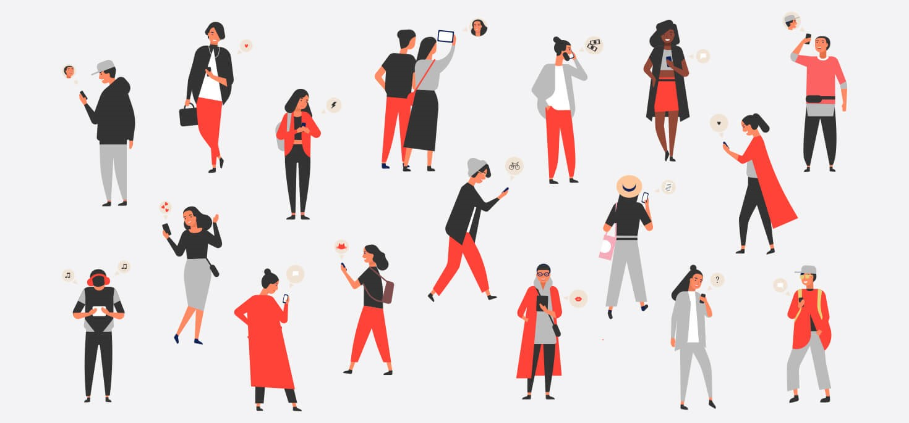
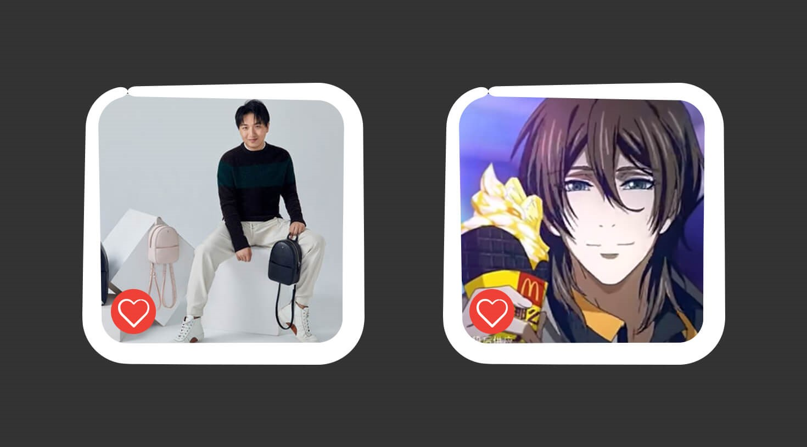

If you’re reading this in North America and we told you right now that there’s a single app that acts as an instant messenger, a subway ticket, a credit card, a newsstand, and more, you’d tell us we’re having a sci-fi fever dream. But if you’ve ever had the chance to travel to China, you’d know that this inescapable part of everyday life is very much a reality. And it’s called WeChat. The All-In-One-App
Weixin as it’s known in Mandarin, was developed in 2011 by the Chinese conglomerate, Tencent Holdings Ltd, as a messaging app. And over the years it’s evolved significantly to become less of an app experience and more of a ubiquitous piece in nearly everyone’s life in China. WeChat now houses over 902 million daily users who collectively send out an average of 38 billion messages on any given day. At its core, WeChat combines the functionalities of several individual apps we use in North America together into a single platform, and today its capabilities far surpass messaging. WeChat users can now do everything from filing police reports to meeting new people who are nearby (a mode on the app called Shake).

Why Haven’t You Heard Of It Till Now?
Well, that’s a bit of a loaded question. Depending on who you ask, the root cause of its failure to become popular overseas could be the result of censorship or government monitoring. But it ultimately comes down to the fact that it has been designed for a Chinese market. It emerged in China at a time where citizens had no universal way of communicating and has since weaved its way into society as a whole.
But in North America, it’s not like we’re living under a rock. One of the main reasons we haven’t noticed what’s happening in China is that we’re already accustomed to communicating with our peers and can fill our social media quota through a myriad of other services. Basically, text messages and social media apps are, and always have been, accessible. If there was a new platform, no matter how beneficial it might be, the idea of rebuilding our digital networks feels daunting. In short, switching is difficult. Just tell the 2.4 Billion Facebook users.
It’s A Way Of Life
WeChat’s expanding services menu has become so ingrained in the culture that its become nearly impossible for users to switch platforms, even if they choose to. Because it is “the app that does everything,” it accounts for 34% of all mobile data traffic in China. In North America, companies like Facebook and Twitter are vying to become the largest social network globally, WeChat on the other hand, has been developed in a way that fosters a mobile lifestyle. From paying for everyday items to staying in contact with family and friends, users are pretty much able to carry out most of their daily needs through the single app.
Chinese marketers know the nuances of China’s mobile-reliant consumers. In comparison to lengthier, bigger-budgeted, and meticulously planned campaigns we generally see here in North America, marketing in China is a different playing field. Ads are ultimately shareable, viral, don’t have an extensive spend, and can be crafted in the matter of a couple days.
Today’s Lesson Is:
If we can learn anything from WeChat its that having one unified platform can shorten the entire consumer journey. For example, Key Opinion Leaders – or more commonly called KOLs – are the Chinese equivalent of an influencer. These cultural leaders live largely on WeChat, allowing partnered brands to leverage the integration of e-commerce and publications in one area. Because visitors are keeping within this one space, the probability for a conversion is much higher. Instagram has started playing in this space, but compared to WeChat’s e-commerce integration, they’re barely scratching the surface.
Another important lesson is how integrated the digital world has become into the physical world through WeChat integration. In China, the increasing physical touchpoints for mobile consumers has also allowed brands to be even more present in the daily lives of their consumers. Scattered throughout the cities on signs, cashiers, and taxis (to name a few) are QR codes. Remember those? Just scan the code through WeChat and you’ll be immersed back into the digital environment where the brand lives.
Look, we’re not saying users are suddenly going to scrap Instagram or toss aside WhatsApp anytime soon, but it will be interesting to see how digital-first consumers in North America will start adapting to new technology. It’s unlikely that there will be one app to completely disrupt the market, brands, publishers, and marketers but it’s not impossible. What WeChat has done in China is made the experience less about devices and connectivity and all about the cultural nuances. As marketers, we have to take notice of how WeChat has become part of society for a new generation.